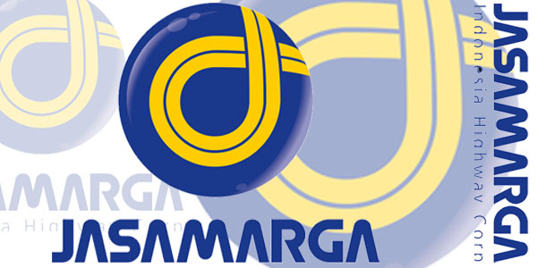
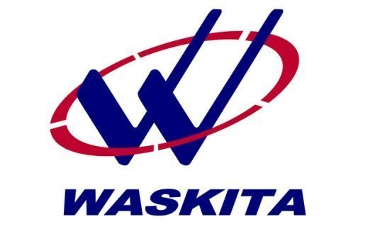
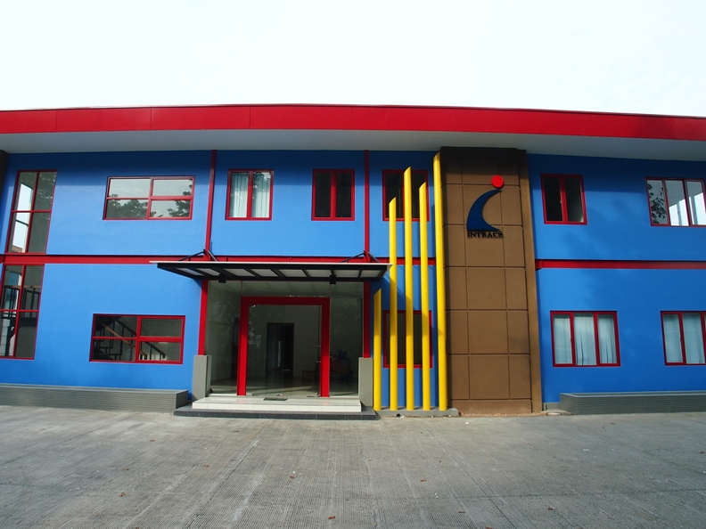

PT Jasa Marga (Persero) Tbk

Jasa Marga adalah Badan Usaha Milik Negara Indonesia yang bergerak di bidang penyelenggara jasa jalan tol.Perusahaan ini dibentuk pada tahun 1978 setelah jalan tol pertama,yang menghubungkan Jakarta-Bogor selesai dibangun
Sebagai perusahaan jalan tol pertama di Indonesia, dengan pengalaman lebih dari 38 tahun dalam membangun dan mengoperasikan jalan tol, saat ini Jasa Marga adalah pemimpin dalam mengelola lebih dari 531 km jalan tol atau 76% dari total jalan tol di Indonesia.
Sebagai perusahaan infrastruktur penyedia jalan tol, keberadaan Jasa Marga sangat dibutuhkan oleh masyarakat luas.
Waskita Toll Road

Established in January 1, 1961 Waskita Karya is one of leading state companies in Indonesia which plays a major role in the development of the country. Originated from a Dutch company named “Volker Aannemings Maatschappij N.V.”,
which was expropriated under the Government's Decree No.62/1961, Waskita Karya was initially participated in the water related developments including reclamation, dredging, harbor and irrigation.
PT Module Intracs Yasatama

Berawal sebagai agen peralatan pengumpulan pendapatan Tol (Toll Collection System) sejak tahun 1991 dari perusahaan asing, pada tanggal 17 Maret 1995 berdirilah PT.Module Intracs Yasatama. Perusahaan ini didirikan dengan kompentensi dalam bidang peralatan pengumpulan pendapatan Tol dan acces control.